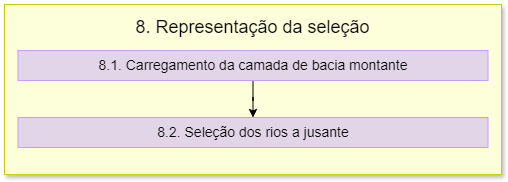

8. Representação da seleção
Aviso
É necessário verificar a itemização dessa etapa.
O fluxograma de processos desta etapa é apresentado a seguir:
Primeiramente é importado o módulo psycopg2.
A função carregar_camada_balanco possui o mesmo processo da função definida na documentação da etapa 2, no item 2.3.
É feita a conexão com o banco de dados PostgreSQL usando o psycopg2.
8.1. Carregamento da camada de bacia montante
É feita uma iteração do cod_otto_bacia para obter o código de montante. Se o código otto for par, ele é usado diretamente. Se for ímpar, itera através dos dígitos do código, procurando o último dígito par.
A variável ottobacias_isr_montante cria uma camada vetorial virtual que seleciona bacias montantes com base no código otto obtido anteriormente. Caso a camada já exista, é removida e a nova camada é adicionada ao projeto.
A variável bacia_montante cria uma camada virtual a partir de comandos SQL para unir as geometrias das bacias montantes selecionadas.
8.2. Seleção dos rios a jusante
Primeiramente é feita a inicialização das variáveis:
rio: uma lista vazia para armazenar os códigos otto dos rios a jusante;
rios: um contador inicizalizado em 0;
compri: uma variável inicializada em 4.
Para a seleção dos rios a jusante é realizado um loop sobre os índices do código otto da bacia. Para cada índice, o código é analisado. Se o último dígito do código for par, esse código é adicionado à lista rio. Se for ímpar , itera através dos dígitos do código, procurando o último dígito par.
Uma variável vazia chamada selecao é inicializada. Para cada código Otto na lista rio, é construída uma parte da cláusula WHERE da consulta SQL, que busca trechos de rio cujo código corresponde ao código otto do rio a jusante.
Utiliza-se a variável sele2 para filtrar os trechos de rio a jusante. É criada uma camada vetorial virtual (ottotrechos_jusante) que contém os trechos de rio a jusante selecionados pela consulta SQL.
Para consertar a parte do Rio Paraíba, então é necessário verificar se o ponto selecionado está na bacia 7588 ou na região abaixo ou acima dele. A condição é verificada e a seleção SQL é estendida de acordo com a situação.
Uma segunda camada vetorial virtual (ottotrechos_jusante_2) é criada, desta vez com base na seleção SQL estendida.
As camadas são carregadas no projeto QGIS com simbologias específicas, usando a função carregar_camada.